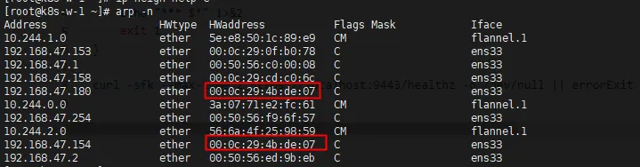

k8s1.30.2堆叠集群部署
k8s1.30.2堆叠集群安装安装。
1、准备三台控制平面机器
两台机器上逐步安装haproxy和keepalived
- 官方的高可用方案
- debian11
2、高可用配置
1、haproxy-2.8.10
1、centos安装
基础依赖
yum install gcc gcc-c++ pcre-devel openssl-devel systemd-devel -y
$ make clean
$ make -j $(nproc) TARGET=linux-glibc \
USE_OPENSSL=1 USE_LUA=1 USE_PCRE=1 USE_SYSTEMD=1
$ sudo make install
不用lua可以不加lua的参数
2、官方配置文件
官方配置文件
# /etc/haproxy/haproxy.cfg
#---------------------------------------------------------------------
# Global settings
#---------------------------------------------------------------------
global
log stdout format raw local0
daemon
#---------------------------------------------------------------------
# common defaults that all the 'listen' and 'backend' sections will
# use if not designated in their block
#---------------------------------------------------------------------
defaults
mode http
log global
option httplog
option dontlognull
option http-server-close
option forwardfor except 127.0.0.0/8
option redispatch
retries 1
timeout http-request 10s
timeout queue 20s
timeout connect 5s
timeout client 35s
timeout server 35s
timeout http-keep-alive 10s
timeout check 10s
#---------------------------------------------------------------------
# apiserver frontend which proxys to the control plane nodes
#---------------------------------------------------------------------
frontend apiserver
bind *:9443
mode tcp
option tcplog
default_backend apiserverbackend
#---------------------------------------------------------------------
# round robin balancing for apiserver
#---------------------------------------------------------------------
backend apiserverbackend
option httpchk
http-check connect ssl
http-check send meth GET uri /healthz
http-check expect status 200
mode tcp
balance roundrobin
server k8s-m-1 192.168.47.158:6443 check verify none
server k8s-m-2 192.168.47.153:6443 check verify none
server k8s-m-3 192.168.47.154:6443 check verify none
启动haproxy -f /etc/haproxy/haproxy.cfg
3、debian安装
Debian安装
1、keepalived-2.2.4
1、centos安装
centos安装
yum install curl gcc openssl-devel libnl3-devel net-snmp-devel -y
./configure
make
make install
可以参考INSTALL文件
2、master配置
Master配置
```dockerfile ! /etc/keepalived/keepalived.conf ! Configuration File for keepalived global_defs { router_id LVS_DEVEL } vrrp_script check_apiserver { script "/etc/keepalived/check_apiserver.sh" interval 3 weight -2 fall 10 rise 2 }
vrrp_instance VI_1 { state MASTER interface ens33 virtual_router_id 66 priority 101 authentication { auth_type PASS auth_pass 42 } virtual_ipaddress { 192.168.47.180 } track_script { check_apiserver } }
3、backup配置
Backup配置
backup配置dockerfile
! /etc/keepalived/keepalived.conf
! Configuration File for keepalived
global_defs {
router_id LVS_DEVEL
}
vrrp_script check_apiserver {
script "/etc/keepalived/check_apiserver.sh"
interval 3
weight -2
fall 10
rise 2
}
vrrp_instance VI_1 { state BACKUP interface ens33 virtual_router_id 66 priority 100 authentication { auth_type PASS auth_pass 42 } virtual_ipaddress { 192.168.47.180 } track_script { check_apiserver } }
4、检查apiserver的接口
check_apiserver.sh
```shell
#!/bin/sh
errorExit() {
echo "*** $*" 1>&2
exit 1
}
curl -sfk --max-time 2 https://localhost:9443/healthz -o /dev/null || errorExit "Error GET https://localhost:9443/healthz"
启动keepalived -f /etc/keepalived/keepalived.conf
5、debian安装
apt-get install build-essential libssl-dev libnl-3-dev libnl-genl-3-dev libnfnetlink-dev pkg-config
然后开始上面的流程
虚拟IP会出现在master的机器上，180就是虚拟的IP，二层网络是根据mac地址通信。 
3、kubeadm1.30.2
1、环境准备
1、启用 IPv4 数据包转发
# 设置所需的 sysctl 参数，参数在重新启动后保持不变
cat <<EOF | tee /etc/sysctl.d/k8s.conf
net.ipv4.ip_forward = 1
EOF
# 应用 sysctl 参数而不重新启动
sudo sysctl --system
2、安装containerd、runc、cni
crontainerd增加代理
vim /usr/local/lib/systemd/system/containerd.service
[Service]
Environment="HTTP_PROXY=http://192.168.61.198:7890"
Environment="HTTPS_PROXY=http://192.168.61.198:7890"
Environment="NO_PROXY=localhost"
systemctl daemon-reload
systemctl restart containerd
3、配置crontainerd cgroup驱动
2、kubeadm准备
1、准备工作
参考 swap的关闭 宿主机dns最好查看一下，否则部署完可能域名不通。
2、安装 kubeadm、kubelet 和 kubectl
export HTTP_PROXY=http://192.168.61.198:7890
export HTTPS_PROXY=http://192.168.61.198:7890
yum 安装的时候可能会失败，没有代理真的不太方便
虽然kubeadm 默认使用 systemd，但是还是检查kubelet是不是都是systemd 在文件 /var/lib/kubelet/config.yaml 查看 cgroupDriver: systemd
3、堆叠高可用
参考，初始化控制平面，另外两台机器需要加入控制平面
1、拉取所有镜像
2、两种初始化方式
1、命令行初始化
kubeadm init --control-plane-endpoint 192.168.47.180:9443 --upload-certs --service-cidr=10.96.0.0/12 --pod-network-cidr=10.244.0.0/16
初始化之后发现有的pod的ip并没有出现在pod cidr中，是因为需要hostNetwork
[root@k8s-m-1 ~]# kubectl get pod -A -o wide
NAMESPACE NAME READY STATUS RESTARTS AGE IP NODE NOMINATED NODE READINESS GATES
kube-system coredns-7db6d8ff4d-8crsr 1/1 Running 0 21m 10.244.0.15 k8s-m-1 <none> <none>
kube-system coredns-7db6d8ff4d-g58zq 1/1 Running 0 21m 10.244.0.14 k8s-m-1 <none> <none>
kube-system etcd-k8s-m-1 1/1 Running 1 21m 192.168.47.158 k8s-m-1 <none> <none>
kube-system etcd-k8s-m-2 1/1 Running 1 20m 192.168.47.153 k8s-m-2 <none> <none>
kube-system etcd-k8s-m-3 1/1 Running 0 20m 192.168.47.154 k8s-m-3 <none> <none>
kube-system kube-apiserver-k8s-m-1 1/1 Running 1 21m 192.168.47.158 k8s-m-1 <none> <none>
kube-system kube-apiserver-k8s-m-2 1/1 Running 1 20m 192.168.47.153 k8s-m-2 <none> <none>
kube-system kube-apiserver-k8s-m-3 1/1 Running 1 20m 192.168.47.154 k8s-m-3 <none> <none>
kube-system kube-controller-manager-k8s-m-1 1/1 Running 1 21m 192.168.47.158 k8s-m-1 <none> <none>
kube-system kube-controller-manager-k8s-m-2 1/1 Running 1 20m 192.168.47.153 k8s-m-2 <none> <none>
kube-system kube-controller-manager-k8s-m-3 1/1 Running 1 20m 192.168.47.154 k8s-m-3 <none> <none>
kube-system kube-proxy-c4h56 1/1 Running 0 20m 192.168.47.153 k8s-m-2 <none> <none>
kube-system kube-proxy-q9wbn 1/1 Running 0 20m 192.168.47.154 k8s-m-3 <none> <none>
kube-system kube-proxy-qsrkf 1/1 Running 0 20m 192.168.47.155 k8s-w-1 <none> <none>
kube-system kube-proxy-swqmx 1/1 Running 0 21m 192.168.47.158 k8s-m-1 <none> <none>
kube-system kube-scheduler-k8s-m-1 1/1 Running 1 21m 192.168.47.158 k8s-m-1 <none> <none>
kube-system kube-scheduler-k8s-m-2 1/1 Running 1 20m 192.168.47.153 k8s-m-2 <none> <none>
kube-system kube-scheduler-k8s-m-3 1/1 Running 1 20m 192.168.47.154 k8s-m-3 <none> <none>
[root@k8s-m-1 ~]# kubectl get pod etcd-k8s-m-1 -n kube-system -o yaml|grep hostNetwork
hostNetwork: true
2、配置文件的初始化
1) ipvs 相关初始化 配置文件的初始化可以增加功能：ipvs、kubelet systemd等
- 如果需要变成ipvs， rr、wrr、sh都是算法
yum install ipset ipvsadmin -y 重启失效 modprobe ip_vs modprobe ip_vs_rr modprobe ip_vs_wrr modprobe ip_vs_sh modprobe nf_conntrack_ipv4 高版本内核 nf_conntrack 重启还在 cat > /etc/sysconfig/modules/ipvs.modules <<EOF #!/bin/bash modprobe ip_vs modprobe ip_vs_rr modprobe ip_vs_wrr modprobe ip_vs_sh modprobe nf_conntrack EOF chmod 755 /etc/sysconfig/modules/ipvs.modules && bash /etc/sysconfig/modules/ipvs.modules && lsmod | grep ip_vs2) 没有kubu-proxy的初始化，cilium v1.30apiVersion: kubeadm.k8s.io/v1beta3 bootstrapTokens: - groups: - system:bootstrappers:kubeadm:default-node-token token: abcdef.0123456789abcdef ttl: 24h0m0s usages: - signing - authentication kind: InitConfiguration localAPIEndpoint: advertiseAddress: 192.168.47.158 bindPort: 6443 nodeRegistration: criSocket: unix:///var/run/containerd/containerd.sock imagePullPolicy: IfNotPresent name: k8s-m-1 taints: null --- apiServer: timeoutForControlPlane: 4m0s apiVersion: kubeadm.k8s.io/v1beta3 certificatesDir: /etc/kubernetes/pki clusterName: kubernetes controllerManager: {} dns: {} etcd: local: dataDir: /var/lib/etcd imageRepository: registry.k8s.io kind: ClusterConfiguration kubernetesVersion: 1.30.0 networking: dnsDomain: cluster.local serviceSubnet: 10.96.0.0/12 podSubnet: 10.244.0.0/16 scheduler: {} controlPlaneEndpoint: "192.168.47.180:9443" --- kind: KubeletConfiguration apiVersion: kubelet.config.k8s.io/v1beta1 cgroupDriver: systemd --- apiVersion: kubeproxy.config.k8s.io/v1alpha1 kind: KubeProxyConfiguration mode: "ipvs"v1.29apiVersion: kubeadm.k8s.io/v1beta3 bootstrapTokens: - groups: - system:bootstrappers:kubeadm:default-node-token token: abcdef.0123456789abcdef ttl: 24h0m0s usages: - signing - authentication kind: InitConfiguration localAPIEndpoint: advertiseAddress: 192.168.47.158 bindPort: 6443 nodeRegistration: criSocket: unix:///var/run/containerd/containerd.sock imagePullPolicy: IfNotPresent name: k8s-m-1 taints: null --- apiServer: timeoutForControlPlane: 4m0s apiVersion: kubeadm.k8s.io/v1beta3 certificatesDir: /etc/kubernetes/pki clusterName: kubernetes controllerManager: {} dns: {} etcd: local: dataDir: /var/lib/etcd imageRepository: registry.k8s.io kind: ClusterConfiguration kubernetesVersion: 1.30.0 networking: dnsDomain: cluster.local serviceSubnet: 10.96.0.0/12 scheduler: {} controlPlaneEndpoint: "192.168.47.180:9443" --- kind: KubeletConfiguration apiVersion: kubelet.config.k8s.io/v1beta1 cgroupDriver: systemdapiVersion: kubeadm.k8s.io/v1beta3 bootstrapTokens: - groups: - system:bootstrappers:kubeadm:default-node-token token: abcdef.0123456789abcdef ttl: 24h0m0s usages: - signing - authentication kind: InitConfiguration localAPIEndpoint: advertiseAddress: 192.168.47.158 bindPort: 6443 nodeRegistration: criSocket: unix:///var/run/containerd/containerd.sock imagePullPolicy: IfNotPresent name: k8s-m-1 taints: null --- apiServer: timeoutForControlPlane: 4m0s apiVersion: kubeadm.k8s.io/v1beta3 certificatesDir: /etc/kubernetes/pki clusterName: kubernetes controllerManager: {} dns: {} etcd: local: dataDir: /var/lib/etcd imageRepository: registry.k8s.io kind: ClusterConfiguration kubernetesVersion: 1.29.0 networking: dnsDomain: cluster.local serviceSubnet: 10.96.0.0/12 scheduler: {} controlPlaneEndpoint: "192.168.47.180:9443" --- kind: KubeletConfiguration apiVersion: kubelet.config.k8s.io/v1beta1 cgroupDriver: systemd
3、初始化失败，清理环境
参考4、初始化之后的校验
校验ipvs校验
[root@k8s-m-1 ~]# kubectl logs -n kube-system `kubectl get pods -n kube-system -l k8s-app=kube-proxy -o name|head -1` |grep ipvs
I0701 10:23:03.745006 1 server_linux.go:233] "Using ipvs Proxier"
[root@k8s-m-1 ~]# kubectl get cm kubelet-config -n kube-system -o yaml|grep cgroupDriver
cgroupDriver: systemd
4、扩展的安装
1、网络插件的选择
1、cilium
1、安装cli
2、安装cilium
3、验证安装
pod只会在worker上运行，需要配置worker, 最少需要两个worker，要不然会一直pending。
4、访问hubble ui
5、通过helm安装
Helm安装
helm repo add cilium https://helm.cilium.io/
helm install cilium cilium/cilium --version 1.15.6 \
--namespace kube-system \
--set k8sServiceHost=192.168.47.180 \
--set k8sServicePort=9443 \
--set hubble.relay.enabled=true \
--set hubble.ui.enabled=true
helm install cilium cilium/cilium --version 1.15.6 \
--namespace kube-system \
--set k8sServiceHost=192.168.47.180 \
--set k8sServicePort=9443 \
--set hubble.relay.enabled=true \
--set hubble.ui.enabled=true \
--set kubeProxyReplacement="true" \ #官方这个版本的帮助文档里没有这个配置，可以忽略
--set routingMode=native \ #本地路由模式
--set autoDirectNodeRoutes=true \
--set ipv4NativeRoutingCIDR=10.244.0.0/16 \
--set ipam.mode="cluster-pool" \ #pod ip池
--set ipam.operator.clusterPoolIPv4PodCIDRList="10.244.0.0/16" \
--set ipam.operator.clusterPoolIPv4MaskSize=24 \
--set bpf.masquerade=true \ #基于bpf的ip伪装，默认是iptables
--set ipMasqAgent.enabled=true
修改pod cidr的时候，需要将已有的cni的插件的配置清空，网卡配置也要清空。
helm install cilium cilium/cilium --version 1.15.6 \
--namespace kube-system \
--set k8sServiceHost=192.168.47.149 \
--set k8sServicePort=6443 \
--set hubble.relay.enabled=true \
--set hubble.ui.enabled=true \
--set kubeProxyReplacement=true \
--set routingMode=native \
--set autoDirectNodeRoutes=true \
--set ipv4NativeRoutingCIDR=10.244.0.0/16 \
--set ipam.mode="cluster-pool" \
--set ipam.operator.clusterPoolIPv4PodCIDRList="10.244.0.0/16" \
--set ipam.operator.clusterPoolIPv4MaskSize=24 \
--set bpf.masquerade=true \
--set ipMasqAgent.enabled=true \
--set ipMasqAgent.config.nonMasqueradeCIDRs='{10.0.0.0/8,172.16.0.0/12,192.168.0.0/16}' \
--set ipMasqAgent.config.masqLinkLocal=false \
--set loadBalancer.mode=hybrid \
--set loadBalancer.serviceTopology=true \
--set bandwidthManager.enabled=true \
--set bandwidthManager.bbr=true \
--set devices=ens33
pod网络之间，内网之间的数据通信不需要ip伪装。
Kubernetes插件之ip-masq-agent-腾讯云开发者社区-腾讯云
6、node.cilium.io/agent-not-ready
node.cilium.io/agent-not-ready 是cilium自动给节点加的污点，防止cilium在接管节点cni之前已经有pod部署在目标节点上。
未开始安装插件未开始安装插件
{
"name": "k8s-m-1",
"taints": [
{
"effect": "NoSchedule",
"key": "node-role.kubernetes.io/control-plane"
},
{
"effect": "NoSchedule",
"key": "node.kubernetes.io/not-ready"
}
]
}
{
"name": "k8s-m-2",
"taints": [
{
"effect": "NoSchedule",
"key": "node-role.kubernetes.io/control-plane"
},
{
"effect": "NoSchedule",
"key": "node.kubernetes.io/not-ready"
}
]
}
{
"name": "k8s-m-3",
"taints": [
{
"effect": "NoSchedule",
"key": "node-role.kubernetes.io/control-plane"
},
{
"effect": "NoSchedule",
"key": "node.kubernetes.io/not-ready"
}
]
}
{
"name": "k8s-w-1",
"taints": [
{
"effect": "NoSchedule",
"key": "node.kubernetes.io/not-ready"
}
]
}
{
"name": "k8s-w-2",
"taints": [
{
"effect": "NoSchedule",
"key": "node.kubernetes.io/not-ready"
}
]
}
安装插件过程中
安装插件过程中
{
"name": "k8s-m-1",
"taints": [
{
"effect": "NoSchedule",
"key": "node-role.kubernetes.io/control-plane"
},
{
"effect": "NoSchedule",
"key": "node.kubernetes.io/not-ready"
},
{
"effect": "NoSchedule",
"key": "node.cilium.io/agent-not-ready"
}
]
}
{
"name": "k8s-m-2",
"taints": [
{
"effect": "NoSchedule",
"key": "node-role.kubernetes.io/control-plane"
},
{
"effect": "NoSchedule",
"key": "node.kubernetes.io/not-ready"
},
{
"effect": "NoSchedule",
"key": "node.cilium.io/agent-not-ready"
}
]
}
{
"name": "k8s-m-3",
"taints": [
{
"effect": "NoSchedule",
"key": "node-role.kubernetes.io/control-plane"
},
{
"effect": "NoSchedule",
"key": "node.kubernetes.io/not-ready"
},
{
"effect": "NoSchedule",
"key": "node.cilium.io/agent-not-ready"
}
]
}
{
"name": "k8s-w-1",
"taints": [
{
"effect": "NoSchedule",
"key": "node.kubernetes.io/not-ready"
},
{
"effect": "NoSchedule",
"key": "node.cilium.io/agent-not-ready"
}
]
}
{
"name": "k8s-w-2",
"taints": [
{
"effect": "NoSchedule",
"key": "node.kubernetes.io/not-ready"
},
{
"effect": "NoSchedule",
"key": "node.cilium.io/agent-not-ready"
}
]
}
7、删除未被cilium管理的pod
kubectl get pods --all-namespaces -o custom-columns=NAMESPACE:.metadata.namespace,NAME:.metadata.name,HOSTNETWORK:.spec.hostNetwork --no-headers=true | grep '<none>' | awk '{print "-n "$1" "$2}' | xargs -L 1 -r kubectl delete pod
8、验证安装
Kubernetes Without kube-proxy — Cilium 1.15.6 documentation
1、bpf伪装命令
root@k8s-m:~# kubectl -n kube-system exec ds/cilium -- cilium-dbg bpf ipmasq list
Defaulted container "cilium-agent" out of: cilium-agent, config (init), mount-cgroup (init), apply-sysctl-overwrites (init), mount-bpf-fs (init), clean-cilium-state (init), install-cni-binaries (init)
IP PREFIX/ADDRESS
10.0.0.0/8
169.254.0.0/16
172.16.0.0/12
192.168.0.0/16
9、helm安装的一些参数的优缺点
Maglev 一致性哈希，启用 Maglev 散列以实现服务负载平衡，启用 Maglev 将使每个 Cilium 管理节点的内存消耗比默认设置更高
--set loadBalancer.algorithm=maglev
https://docs.cilium.io/en/stable/network/kubernetes/kubeproxy-free/#maglev-consistent-hashing
DSR
由于特定于 Cilium 的 IP 选项可能会被底层网络结构丢弃，因此 DSR 模式可能无法在某些公共云提供商环境中工作。
--set loadBalancer.mode=dsr \
--set loadBalancer.dsrDispatch=opt
https://docs.cilium.io/en/stable/network/kubernetes/kubeproxy-free/#direct-server-return-dsr
有关分析：
https://bbs.huaweicloud.com/blogs/417889
Geneve
适用于本地路由模式
--set tunnelProtocol=geneve \
--set loadBalancer.mode=dsr \
--set loadBalancer.dsrDispatch=geneve \
https://docs.cilium.io/en/stable/network/kubernetes/kubeproxy-free/#direct-server-return-dsr-with-geneve
混合 DSR 和 SNAT 模式（最好的）
Cilium 还支持混合 DSR 和 SNAT 模式，即对 TCP 连接执行 DSR，对 UDP 连接执行 SNAT。
--set loadBalancer.mode=hybrid \
https://docs.cilium.io/en/stable/network/kubernetes/kubeproxy-free/#hybrid-dsr-and-snat-mode
Pod 命名空间中的套接字负载均衡器绕过
如果要使用Istio sidecar等操作可能需要开启
--set socketLB.hostNamespaceOnly=true
https://docs.cilium.io/en/stable/network/kubernetes/kubeproxy-free/#socket-loadbalancer-bypass-in-pod-namespace
LoadBalancer 和 NodePort XDP 加速
本地部署的环境可能不行，云上可能支持
--set loadBalancer.acceleration=native \
自检是否开启加速
kubectl -n kube-system exec ds/cilium -- cilium-dbg status --verbose | grep XDP
Bandwidth Manager
Bandwidth Manager requires a v5.1.x or more recent Linux kernel.
centos7.9,kernel 6.9.7-1.el7.elrepo.x86_64, cilium 1.15.6 安装之后校验未生效，可能是因为是虚拟机的原因，无法识别到网卡
$ kubectl -n kube-system exec ds/cilium -- cilium-dbg status | grep BandwidthManager
BandwidthManager: EDT with BPF [BBR] [eth0]
10、可能出现的问题
1、Bandwidth Manager未生效
kubectl logs pod/cilium-nxzls -n kube-system|grep -i bandwidth
Defaulted container "cilium-agent" out of: cilium-agent, config (init), mount-cgroup (init), apply-sysctl-overwrites (init), mount-bpf-fs (init), clean-cilium-state (init), install-cni-binaries (init)
time="2024-07-10T10:08:47Z" level=info msg=" --enable-bandwidth-manager='true'" subsys=daemon
time="2024-07-10T10:08:48Z" level=warning msg="BPF bandwidth manager could not detect host devices. Disabling the feature." subsys=bandwidth-manager
time="2024-07-10T10:08:48Z" level=info msg="Start hook executed" duration="624.35µs" function="*bandwidth.manager.Start" subsys=hive
这个问题官网文档中朴实无华的解决办法就是
--set devices=ens33
root@k8s-m:~# kubectl -n kube-system exec ds/cilium -- cilium-dbg status | grep BandwidthManager
Defaulted container "cilium-agent" out of: cilium-agent, config (init), mount-cgroup (init), apply-sysctl-overwrites (init), mount-bpf-fs (init), clean-cilium-state (init), install-cni-binaries (init)
BandwidthManager: EDT with BPF [BBR] [ens33]
2、 valid cgroup base path found: socket load-balancing tracing with Hubble will not work
参考官方文档 原因是没有使用cgroup v2 关于 cgroup v2
11、与istio集成
5、工具的安装
1、helm安装
2、dashboard
1、创建用户
2、访问web
kubectl -n kubernetes-dashboard port-forward --address 0.0.0.0 svc/kubernetes-dashboard-kong-proxy 8443:443
3、配置ingress 访问
4、获取token
3、metrics-server
metrics-server 需要取消tls校验 --kubelet-insecure-tls